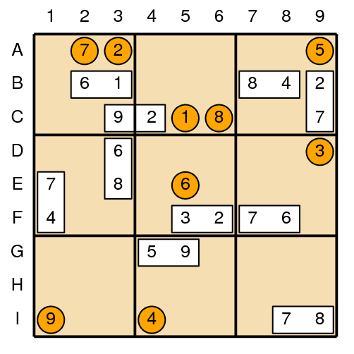
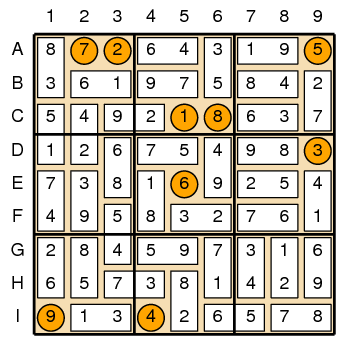

| Source file: | sudominoku.{c, cpp, java} |
| Input file: | sudominoku.in |
As if there were not already enough sudoku-like puzzles, the July 2009 issue of Games Magazine describes the following variant that combines facets of both sudoku and dominos. The puzzle is a form of a standard sudoku, in which there is a nine-by-nine grid that must be filled in using only digits 1 through 9. In a successful solution:
For a su-domino-ku, nine arbitrary cells are initialized with the
numbers
To help you out, we will begin each puzzle by identifying the location of some of the dominos. For example, Figure 1 shows a sample puzzle in its initial state. Figure 2 shows the unique way to complete that puzzle.
|  |  |
| Figure 1: Sample puzzle | Figure 2: Solution |
Input: Each puzzle description begins with a line containing
an integer N, for
10 ≤ N ≤ 35, representing the
number of dominos that are initially placed in the starting
configuration. Following that are N lines, each
describing a single domino as
After the specification of the N dominos will be a final
line that describes the initial locations of the isolated
numbers, ordered from
Output: For each puzzle, output an initial line identifying the puzzle number, as shown below. Following that, output the 9x9 sudoku board that can be formed with the set of dominos. There will be a unique solution for each puzzle.
| Example input: | Example output: |
| 10 6 B2 1 B3 2 C4 9 C3 6 D3 8 E3 7 E1 4 F1 8 B7 4 B8 3 F5 2 F6 7 F7 6 F8 5 G4 9 G5 7 I8 8 I9 7 C9 2 B9 C5 A3 D9 I4 A9 E5 A2 C6 I1 11 5 I9 2 H9 6 A5 7 A6 4 B8 6 C8 3 B5 8 B4 3 C3 2 D3 9 D2 8 E2 3 G2 5 H2 1 A2 8 A1 1 H8 3 I8 8 I3 7 I4 4 I6 9 I7 I5 E6 D1 F2 B3 G9 H7 C9 E5 0 | Puzzle 1 872643195 361975842 549218637 126754983 738169254 495832761 284597316 657381429 913426578 Puzzle 2 814267593 965831247 273945168 392176854 586492371 741358629 137529486 459683712 628714935 |